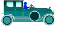

|
 previous / next column
A PHYSICIST WRITES . . .
(October 2010)
It's like the end of an era. I acquired my Toyota Corolla Liftback (slightly elongated compared with the hatchback) in 2001: she was four years old, had done 29,000 miles, and was the newest and most costly vehicle I had ever bought. Her colour was Lipstick Red, though in recent years the make-up became a bit patchy. And with the car came free MOTs for life! Or at least, for her life with me - or do I mean my life with her?
So every year I took her back to Octagon Motors, and drank their coffee, read their papers and tried to ignore their daytime TV for an hour. Then I drove her away waving the new certificate, having paid not a penny. But last month, alas, she let me down and failed the test: a front suspension arm needed replacing. The small print said that for the free tests to continue, any repair work had to be done by Octagon, so I paid up. It was more than my usual workshop would have charged, but of course I am still well in pocket, so I'm not unhappy.
Sorry: did you think I had said goodbye to my Corolla? But why should I, when she seems to be driving as well as ever? And there's only 96K on the clock even now. I don't mind parting with money, but I like to have a good reason. Though I do worry that if everyone copied my spending habits, the UK economy really would die a death. But there's little danger of that, to judge by the number (and the average size) of new and newish cars on the road.
Last month, if you remember, I cheekily put motorists into two groups - those who drive much like me, and the rest. It was my 'external' habits that I had in mind: keeping to the speed limit, slowing down slowly, accelerating briskly. But other things you're doing can be even more important, whether or not drivers around you are aware of them.
An example is the positioning of your hands. Except when changing gear, I aim to have mine both firmly on the wheel, at roughly ten to two. And I use push-pull steering, keeping my hands level with each other and sliding between about five to one and twenty to four. The direction-indicator I nudge with the nearest finger. These weren't difficult habits to get into.
But compare them with what some other motorists do ... I'm rarely more nervous than when sitting beside drivers who negotiate roundabouts and corners one-handedly. Whether they do this with a palm flat on the wheel or with a hand on its rim, they are simply not in control of the car: if they needed to turn the wheel suddenly in an unexpected direction, the result would be disaster. And if their arm was lying across the wheel when a frontal impact set off the air-bag, which bone would fracture the other, forearm or forehead?
Here's another way you could group motorists: I will happily take criticism or comments on my driving - like any advanced driver, I guess. After all, that's the way we got there. But how do you suggest to most other drivers that they have acquired habits that are putting them, and other road-users, in unnecessary danger? It's one of the great taboos.
I suppose this is because when you're at the wheel the car becomes an extension of yourself, and so the way you drive becomes as sensitive an issue as, well, BO! But the big question is this: are unsafe vehicles or unsafe drivers potentially the worse road hazard? Just as much as the MOT, surely, we need its equivalent, a regular Motorists' Ableness Check: the MAC, perhaps?
Glancing at my July column, I'm reminded that I wrote it in rather a hurry, just before getting ready for what proved to be a most enjoyable holiday in Fife. We went by train up to Kirkcaldy where we hired a car (booked in advance). As with previous driving holidays, let me share some learning-experiences with you.
Actually, the first one is about Senior Railcards. They restrict you to trains after a certain time (Monday to Friday) for travel into London, but I found that this restriction doesn't apply if you're also booking an onward leg northwards (ie, beyond the SE region): good news for holiday-makers, but not so good for the commuters who have to squeeze in with us.
I knew car-hire insurance carried a very high excess, and I expected to have to pay for expensive top-up cover to avoid this. But then I discovered by chance that independent companies offer much cheaper cover not only for the excess, but also for damage to tyres, glass, roof and underbody, which is often excluded altogether by the insurance that comes with the car. The company I used was Questor: see www.questor-insurance.co.uk or phone 0844 736 5342.
The car presented to us was a Kia K10. The man pointed out the basic controls (me, I wouldn't hire a car to anyone who needed them pointing out), and we set off ... or to tell the truth, I failed even to get out of the parking-space. I thought he had said: to select reverse, you first lift the gear-stick (which I am quite used to doing, thank you). On being called out of the office again, he explained that it was the flange below the knob that had to be lifted. I won't forget this.
Finally, a detail of life and manners in Fife: at sunset Mrs S and I were strolling across a field, hand in hand as usual - otherwise our different natural walking speeds cause us to separate. As we approached a road three youths cycled past, and one of them (somehow detecting our railcards?) called out: "Granny-love!" Here, down south, it would probably have been something quite unprintable.
Peter Soul
previous / next column
|